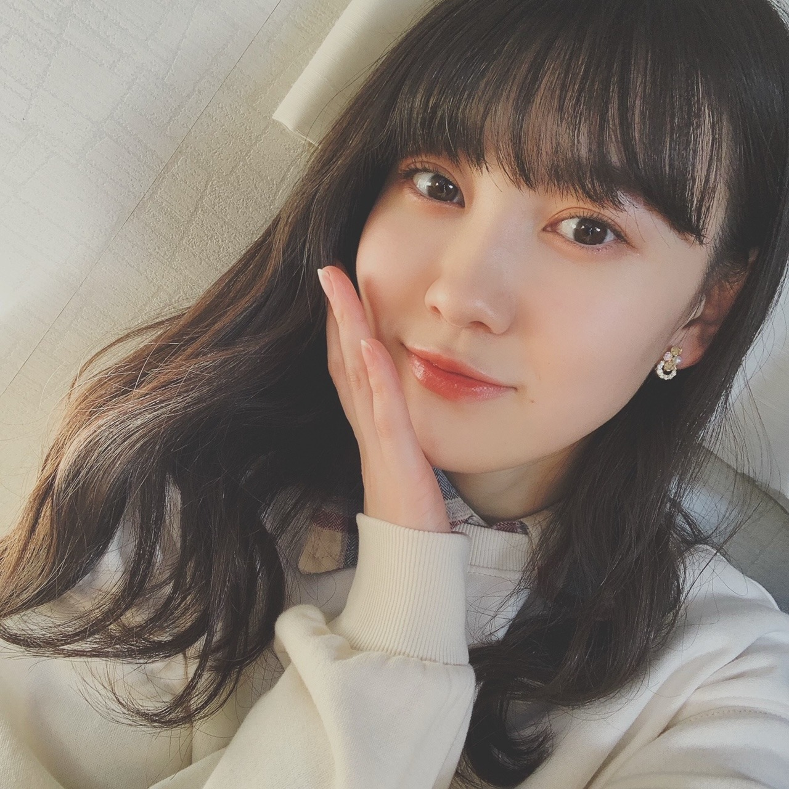

2020/1111Wed控えめなチェック 松尾美佑
今日は
いちいちいちいち
わんわんわんわん
な日ですね。
千葉県出身
高校2年生
16歳
今日はちょっぴり寝坊しちゃいました、
松尾美佑です¨̮
マイブームはメープルナッツですꪔ̤̥
今の気分は、ジェットコースターに無性に乗りたい気分です。
この気分たまにありますよね、共感して欲しいです
ʕʘ̅͜ʘ̅ʔ

髪の毛いつもと違う巻き方したつもりだったんですけど、あんまり分かりませんね(´◔_◔)
私の髪の毛の話はポイッとしておいて、
11月10日からスタートしました！
『ノギザカスキッツ ACT2』！！！
ノギザカスキッツに参加させて頂いてから、新しい自分の気持ちと出会うことが多くて嬉しいです！
考えたり向き合ったりする事が増えて、これが成長になってたらいいなぁって思います¨̮
3期生さんも合流されて、これからもっとパワーアップして楽しんで頑張ります！
(ง ꙭ)ง(ง ꙭ)ง(ง ꙭ)ง
そして！
4期生ライブの開催が発表されました！！！
いぇーーーい！！
本っ当に楽しみです
まだ皆さんにはお会いすることが出来ませんが、配信ライブという形で遠くにいる方へも届けることができるのがとても嬉しいです☺︎
皆さんの心をドキッとさせられるようなパフォーマンスを届けられるように精一杯頑張ります！
楽しみで楽しみで楽しみです。
自分の好きなことを楽しんで好きなだけ頑張れる環境に本当に感謝しています！
乃木坂46 4期生ライブ 2020
12月6日 です！


ちょっとだけの三つ編みがポイントです。
お返事！
✽ 最近ハマってる食べ物は？
メープルナッツ！もうすぐリスになれそう
✽ クリスマスプレゼントで1番欲しい物は？
塗り絵！
あと新しいクリスマスオーナメントも！
✽ 夜更かしできる秘技とかありますか？
目を閉じない。 ？？
✽ 漢検何級受けたの？？
ひみつー！絶対教えないよ (⃔ ･ᴗ･ )⃕↝
ただ言えるのは過去に5回漢検を受けて私は1回しか受かったことが無いということです。
✽ ミュウちゃんは恐竜好きですか？
今使ってる携帯のケースは恐竜さんが立体的に6匹ついています。
「どちらかと言えば好き」に分類されると思います。
11月10日！
阪口珠美さん、お誕生日おめでとうございます！
46時間テレビの時阪口珠美さんの電視台のたまトレをブース見てて、本当に明るくって楽しくって何よりも物凄くスタイルが良くて凄く印象に残っています！
これからノギスキの時とかにお話できたら嬉しいなと思います！
素敵な一年になりますようにと願っています！
先日、テストがあったんです。
だから前日に暗記科目だけでもと思って、
生物を沢山お勉強したんです。
そしたらなんと、私の受験科目は生物じゃなくて世界史でした。
元気だして頑張りましょう！
どーにかなる！
明日は〜
なお〜〜〜〜〜〜〜〜〜
今何食べたい？
からいものたべたい。
ミュウでした¨̮

襟がチェックです。
ばいっっっっっっっ( Ꙭ )/''
コメント(195)
チェック！！
チェック！！！
要チェック！！！！
可愛いみゆちゃん
要チェック！！！！！
チェックすき
ちょっぴり寝坊？ちょっぴり？
いいね、ジェットコースター。乗ってい
るとカロリーがスピードについていけな
いから、何を食べても０カロリー。
ウマーベラス。
髪、毛先がボリューミー？
ゴージャス可愛い。
４期生ライブ、もうすぐですね。リハは
もう始まってるのかな。
今日のぎおびで、かずみんが配信だと、
カメラ位置がわかるからやりやすいって
言ってました。
ミュウちゃんのいい表情沢山みたい。
ばいいいいいいっ。
今日はいちいちいちでわんわんわんな日やね。
すごいわかる笑 最近全然乗ってないってのあるかもしれへんけど、、ユニバのハリドリ乗りたい..
巻いてんの大人っぽくて素敵やん、服装もおしゃれさんやね
ノギザカスキッツ見たよーこれを機に3期生ともっと仲良くなれるね！
4期生ライブおめでとう！！tif以来の4期生ライブやね、ガルルが今でも忘れられんぐらい最高やったなぁ 楽しみしてるね！
ほんまやん三つ編みある笑めっちゃかわいいやん！めっちゃ好き！
またね美佑ちゃん
珠ちゃんと仲良くなってほしいなぁ
珠ちゃんは人見知りするから
ミュウちゃんから行っちゃって笑
そしてライブ決定おめでとう！
見るの悩んでたけど
ミュウちゃんのブログ読んで
俄然、見たくなってきた～
新4期のユニットみたい！
最後に質問
この冬に着たいアウターはある？
もしくはお気に入りの服でも
またね～
かわいげのあるものなら 大抵は 飾れば オーナメント
本当に綺麗でかわいい…
みゆちゃんのお勉強のはなしをきくと、私も頑張ろうって思えますᕙ( ˙-˙ )ᕗ
＊配信ライブ、受験勉強でみれませんが、上手くいくように念じてます๛ก(ｰ̀ωｰ́ก)(届きましたか？笑)
受験頑張って、来年こそは本物の乃木坂さんに会えるようコロナの収束も願いつつ頑張りますᕙ( ˙-˙ )ᕗ
勉強もお仕事も頑張っているみゆちゃんを見るとほんとに元気が貰えるし、私も頑張らなきゃって思います。ほんとに私の尊敬出来る人です(*¨)~♡
これからもお体に気をつけて頑張ってください！
まだミュウちゃんは引けてないですが、登場めちゃくちゃ嬉しい！
ジェットコースター乗りたい気分、すごく分かります
ありますよね、そういう時
どんどんきれいになっていくのを見れて嬉しいです！
今年は受験生なのでライブ見れないんだ…
なのでまたお話きかせてね〜
《質問・お願い》
・受験に集中できません！応援ください！！
・勉強に困ったらなにする〜？
・自分の「ここがすごい」と思うとこは〜？
またね！！
ね！ノギザカスキッツ3期生も加わったね。
3期と4期のコラボのコント見たいなぁ。
ぽいっとした髪の毛の話し拾いますー 写真の髪型めちゃくちゃ好きだよ イヤリングも可愛いね！
ノギスキact2始まったね～ 今回は三期生が可愛すぎた！特にれんかちゃん可愛すぎたね
美佑ちゃんとれんかちゃんって同い年なんだね 話したりとかしてるのかな
これをきに三期生と仲良くなれたらいいね
そして、四期生ライブ開催決定おめでとう！！！ やっときたよー ずっと待ってた～ tifだけじゃ物足りなかったし、16人でまたパフォーマンスが見られるの最高だよ！
美佑ちゃんがセンター曲で披露もあるのかな～ ミュウスマイルが目立つからどこにいても見つけられるよ！
明るい曲でも似合うし、かっこいい曲も見てみたいなー
また五日後のブログ楽しみにしてるよー！
チェックお似合いで嬉しいな◎
早くライブでミュウちゃんの歌声聞けるの楽しみに待ってるね♪
ってか今日は「ワンちゃんが沢山、ミュウ(>o<)ちゃんにもファンの人にもついてきている」日だったねぇ～。
それと同時に「一気に冬感が増して、寒く」なってきた今日この頃。ミュウ(>o<)ちゃんは風邪等々はひいてないかい？僕もなんとか元気に居れてるけど、足が冷たくなってる毎日だから温めるのが大変になってきたよぉ～。
って、ミュウ(>o<)ちゃんは相変わらず「まだ高２なのかっ！Σ(･ω･ﾉ)ﾉ！」っていう位、べっぴんさんですなぁ～( *´艸｀) 子供らしい一面があったり、大人っぽい一面もあるしで、ますます僕というお兄ちゃんは４期ちゃんから目が離せなくなったよぉ～。ちょっと目を離すと、どっか行っちゃいそうだし( *´艸｀)
「今一番欲しい物は？」って聞かれて「塗り絵っ！ヽ(^o^)丿」って答えたところも可愛かった。
そして、先日から「ノギザカスキッツ」の第二弾！「ノギザカスキッツACT2」が放送開始となったねぇ～。
ミュウ(>o<)ちゃんにとっては、途中参戦だったから自分の個性を引き出す事も半分になっちゃったけど、ＡＣＴ2では、最初から最後まで「４期ちゃんは１６人」という事で、ミュウ(>o<)ちゃんを含めて更には、歳の近いパイセンな「３期ちゃん１２人」もいるから、計２８人で、前作では出せなかったミュウ(>o<)ちゃんの個性を思う存分出し切って、更には新しい一面も見出せるといいね(*^▽^*)今作も僕は録画＆リアルタイムで見るという事は忘れてないから、永久保存版として残すつもりだよぉ～ヽ(^o^)丿
そして、これもまた「４期ちゃん１６人には、ちょっと早めのクリスマスプレゼント」が貰えたね。
完成された４期ちゃん１６人での「４期ちゃんLIVE！」
誰一人として、先輩達はいないし自分たちだけで創り上げるLIVE。去年は１１人だったものを今年は１６人でパワーアップした形で出来る「幸せを噛みしめながら」当日に向けてリハ等々頑張ってね☆彡
（σ(・ω・)は、「頑張ってね」っていう言葉はあまり使わないんだけど、「本当に心底本気になっている人にしか使わない言葉だぞぉ～」）
４期ちゃんが本格的に始動し始めるのはこれからだし、思う存分、１６人分の個性を発揮して、お互いを励まし合って絆を深めていってね。僕はその成長過程を見守っているからね☆彡
最近はまた「冬という季節とコロナ之助左衛門という曲者」がいる事もあり、まだまだ安心できない世の中だけど、ミュウ(>o<)ちゃんもそれに負けないように「楽しく、ハイテンションで」って違うか(笑)( *´艸｀) 乃木活を楽しんでいってね☆彡
それじゃあ、次のブログもめっちゃ楽しみにしてるねぇ～ヽ(^o^)丿また５日後に会おうね♪
明日も一日！一緒にお家時間を楽しもうね♪大好きだよ♪ミュウ(>o<)ちゃん☆彡
超個人的なお話。昨日11/10で自分の好きなアーティストさんが10周年を迎えたんです。10周年記念ライブを配信してたので観てたんですけどやっぱり音楽って凄い力を持ってるなぁって。曲を歌う人もいれば曲に合わせて踊る人もいて、1つのパフォーマンスとしてそれを見た時に凄く楽しい気持ちになることもできるし、感動させることもできる。もちろんそれは乃木坂のパフォーマンスにも言えることで無観客の配信ライブでモニター越しに見てる何万人って人の心を動かすことが出来るってめっちゃ凄いなって思いました。
12月6日、もちろん見ます！だって待ちに待った4期生16人の単独ライブですよ？画面の向こうから応援してるので見つけてくれたりレス貰えれば嬉しいです(笑)(笑)
ではでは、またコメントしますね〜？明日も1日がんぱろうね！
今日はポッキー＆プリッツの日
ポッキーかトマトプリッツどちらを食べるか迷うね
ジェットコースターは苦手だけど一緒に乗ってくれるなら乗りたい気分笑
ノギザカスキッツACT2始まったね
どんなミュウちゃんが見られるのかすごく楽しみ
4期生ライブ開催決定おめでとう
同じく楽しみで楽しみで楽しみです
4期生ライブ思いっきり楽しんでね
遠くから応援してる
珠ちゃん誕生日おめでとう
素敵な1年を過ごせますように
テストお疲れ様
うん、どーにかなる
ではまたね
ばいばい
イェーイv(・∀・*)イェーイv(・∀・*)
ﾜｧ───ヽ(*ﾟ∀ﾟ*)ﾉ───ｲ
ﾜｧ───ヽ(*ﾟ∀ﾟ*)ﾉ───ｲ
4期生ライブ!!ヽ(≧▽≦)/ヤター！
絶対見る〜(｣^o^)｣
楽しみだな...
まず一言言わせてください。
最後の写真、いつもと違って大人っぽくてドキッとした(*´ｪ｀*)
最近ミックスナッツばっかり食べてるから俺はもうリスですね。はい。
アーモンドが好きすぎる！
最近夜に音楽聴きながら走りに行ってるんだけど
みゆちゃんが運動する時に聴く音楽とか、おすすめの音楽ある？？
よかったら教えて〜
またねーヾ(｡･∀･｡)
みゆちゃん今日も可愛いです。
みゆちゃん今日も１日お疲れ様です。
今日はお仕事でした。
今日は凄く忙しくて大変でした。
今日はたくさんミスをして怒られました。
次からはミスをしないように気を付けます。
明日からもお仕事頑張ります。
これからもお仕事頑張って下さい。
自分もお仕事頑張ります。
これからのブログを楽しみにしてます。
いつもと違う巻き方、も、勿論分かりま……す……よ……
『ノギスキ ACT2』では早くも3期生のスキットに加え、阿佐ヶ谷姉妹のお二人をゲストに迎える華麗なるスタート。ミュウちゃんの出番が待たれます♪
16人勢揃いとなる『4期生ライブ 2020』開催おめでとう！ 4番目の光が冴え渡るのを願って。
ちょっとだけ三つ編みがしおらしいです。
まさかのテストスケジュール、ちっちゃいことは気にするな、それワカツキ、ワカツキ～♪
メープルナッツってどんな味なんだろ…
ピーナッツをはじめ、ピスタチオとかナッツ類が食べられない、というか嫌いな僕からしたら想像できません…
あ、枝豆とそら豆とひよこ豆とから食べられるんですけどね。
ん？これはナッツ類に入るのか…？
テストお疲れ様でした！
自分が受ける教科間違えてた時の絶望感半端ないですよね。
間違えてたショックと自分のしていた勉強が無駄になったという2つのことで。
ドンマイとしか言えないけど、いつかその生物の知識が役に立つ！
4期生ライブ発表されましたね。
どの曲をやるのかとか、誰がセンターに立つのかとか、今から色々想像しています。
早く12/6になってほしいですね。
寒さが厳しくなってきましたね。
今日、11/11は、12月並の冷え込みらしいです。
寒さ対策をして、風邪をひかないように気をつけてくださいね。
ファイティン
ジェットコースターか、TVの富士急ハイランドの映像とか見ちゃうと、確かに乗りたくなりますよね。私の場合スピードは大丈夫なのですが、高所恐怖症なので、コースターが最上段に達した時が、恐怖の絶頂です。
ノギザカスキッツACT2見ましたよ～。3期生も振り切ってましたね！！新4期生もチャンスが続きます。頑張ってください。
ではまた。
ゾロ目の日は嬉しくなりますー！
メープルナッツ美味しいですね～
毎日車に乗っても楽しいですよ♪
4期生ライブもワクワクします！
ノギスキも凄く元気貰えてます✨
髪の毛とっても憂いを感じます！
三つ編みにもウキウキしますよ✌
恐竜さん好きにも興味深いです！
テストでもダイナミックですね☆
チェックの襟もお洒落さんです～☺
いつもと違う巻き髪も、ちょっとだけの三つ編み超良きです
4期生のライブ楽しみ〜
ほんとのほんとに楽しみにしてるよ！
いつかライブでバク転とか、かっこいいパフォーマンスしてるところも見てみたい！
次の更新も楽しみにしてるよ〜
ちょっとした三つ編みの髪型がとっても素敵です！
なおさ
ときどきさかっこつけて
よしいくぞおら！
とか強気な事言うときあるけどさ
実はジェットコースター怖くていややねん…笑
かなちぃ
みゆ！
やっほー！
ひろき(Yandji)です☺️
ブログ更新ありがとー！！！
質問タイムー！！！
なかなか上手いこといかないとき、どーやって気持ち切り替えてる？
また、コメントするね！
では、またねー！
ひろき(Yandji)より
実は昨日二十歳の誕生日をむかえました
なのに実感が全然ないです(T-T)
そして4期生ライブ決定おめでとう
楽しみにしてますよ～
今日は11月11日、ポッキーの日だね☺︎
いまコアラのマーチ食べてるけど笑
美佑ちゃんはお菓子すきー？
世界史と生物間違えて勉強したんか、、
まぁ、生物の知識が入ったからいいやん(*´-`)
勉強おつかれさま☺︎
〜質問〜
＊最近の柚菜ちゃんとのエピソードありますか？
＊柚菜ちゃんのどこが好き？
以上です！おやすみ美佑ちゃん（´-`）.｡oO
[けんけん]
メープルナッツ！それは絶対美味しいやつヾ(≧▽≦)ﾉ
ノギザカスキッツACT2でも早くミュウちゃんの活躍が見たいな♪
新しいキャラとかあるといいねo(^-^o)(o^-^)o
4期生ライブめっちゃ楽しみ！！！
家でミュウちゃんのタオルとペンライト振って応援するよ♪
今日のミュウちゃんのお写真は全部好きな髪型なのでとっても嬉しいのです(n*´ω`*n)
早くミュウちゃんに会って直接お話しできる日がきますように。。。
それじゃまたねー＼(*⌒0⌒)b
4期生ライブおめでとう！
その日は休み希望出して、家で全力で応援します！
スキッツ観ました〜、３期生も加わってパワーアップしてこれからの展開期待してます！
バスラ のBL予約したよー
寒くなってきたので身体に気をつけてねー
質問です
まいやんがYouTubeで衣装替えながらガルル歌ってたけど、あの中で着てみたい衣装とかありますか？
今日はゾロ目でワンワンワンワンな日だね〜
ワンダフル！
寝坊すると焦っちゃうね〜
ジェットコースターは俺苦手なんだよなぁ
4期生ライブ楽しみ〜
今からワクワクが止まらんな〜
どんなライブになるんだろ？
練習大変だろうけどファイト！
ミュウちゃんテスト大丈夫だったんかなぁ……
でもそういうこともあるよね〜
俺も今就活が大変だけど「どーにかなる！」の気持ちで頑張るぞ〜
それじゃまた5日後に！
じゃあね〜
1枚目と4枚目、いつもと違う大人っぽさがある。いつもはかわいい！って言ってるけど、今回はきれい。
かわいいときれい両方持ってるミュウちゃんはすごい。
2、3枚目は安定でかわいいです笑
大人なミュウちゃん見れて嬉しい！
16人初の4期生ライブ！！
この時を待ってました。
そろそろ来るんじゃないかと期待してたけど、コロナやしなぁって思ってた。
でもオンラインでやってくれるの本当にありがたい。
普段は人気でチケット取れへんし、東京でやること多いから、大阪住みの僕にとっては嬉しいかな。笑
配信でも盛り上げます！！
レッスン忙しくなると思うけど頑張って！
良いライブになること祈ってます。
ではでは体調には気をつけて。
次のブログも待ってます。
いつもありがとう。
学校の勉強は嫌いでしたね～。
(o゜▽゜)o
前回コメントできなかった…(>_<)
1枚目の写真おとなっぽい…！
おとなな感じですごいすきです！♡
4期生ライブおめでとう！まだ見れるかわかんないけど見れたら絶対みます✨
ananをこの前買いました！美佑ちゃんがすごい大人っぽく見えて綺麗でした！沢山読みまくります♪
テスト勉強しなきゃだけどやる気出ない〜ってとき美佑ちゃんはどうしてますか？？
近々またテスト勉強しなきゃだから教えてほしいです！
今日も読めてしあわせでした！
また読めるのを楽しみにしてます！
お見知り置きを
今日もブログ更新ありがとうございます
2週間前テストが終わったのですが、気づけば来週テストです。
受験に1番関わるテストと言われても、実感がなく、
全然頑張れません。
ですが、みゆさんが頑張ってるということなので
僕も頑張ります。
ーーーーーーーーーーーーーーーーーーーーーーーー
勝手にやってる雑学コーナー
きょうは、雑学っていうか、漢字です
「丿乀」
これなんて読むか分かります？
ヒントは、読みは4字です。
答えは次回書かせていただきます。
おまけ
「酸漿」「贖罪」「罷業」
是非こちらも！
ーーーーーーーーーーーーーーーーーーーーーーーー
では、お体に気をつけてください
5日後待ってます
一筆形状仕り候
5日ぶりのこんばんは。
スキッツACT2始まったね。
その前にスキッツ収録後のアイドル道場動画
見ましたよ、自然体のお松が良いね。
確かにアイドルとお笑いってどう結び付くのか
考えてしまう事もあるよね。
コントの多様性がバラエティやトークの
向上性を生む事と同時に自身の裾の広がりを生み
何よりも苦手や出来ない事の垣根をメンバーと
乗り越える事で自身のそしてメンバーとの
連帯感とその成長も生まれるよね、だからACT2
でのお松の活躍を楽しみにしてます。
4期生Liveは本当に楽しみだよね
先日のTIFの4期Liveもとても良かった
今度は16人フル出場でのLive
ミュウちゃんの活躍が楽しみで仕方ない
Live中の何処かでお松のあれが披露されるの
だろうか⁈
いやぁ〜待ち遠しい。
お松は学生だからアイドルとの両立は大変かと
思うけど、同じ学生メンと頑張って欲しい！
3期生はあなた達と近いメンバーだし皆優しい
先輩だから機会があれば仲良くなって欲しいね
応援してます。
頑張れ！ ミュウ
PS. 早くお松の新しい制服姿見たいな！
『 When Miu smiles, it chains to us. 』
最近みゆちゃんの事が気になって気になってしょうがないです笑
みゆちゃんブログ更新ありがとう！
今日はポッポッポ ポッキーな日ですね(？)
ジェットコースターかぁなんとなく分かるかも笑
みゆちゃん可愛くて面白い絵文字いっぱいだね
髪の巻き巻きも前髪もいい感じだよ！すっごく綺麗で可愛い！
スキッツ放送遅れててまだ見れてないけど楽しみにしてる！3期生の皆とも仲良くなれるといいね
うん、楽しんで頑張ってね
4期生ライブ！いぇーい！
画面越しだけどサイリウム振ってみゆちゃんコールするぞぉー笑
みゆちゃんのパフォーマンス楽しみだぁ！
生物の勉強も頑張ったんだから身になってるはずさ
うん、どーにかなる！笑
みゆちゃんの事をもっともっと知りたいです
次回のブログも楽しみにしてます、またね
こんにちは！埼玉の陽一です。
今回の写真は｢オトナみゆ｣だね( ´∀`)
みゆちゃん大人っぽいけど、髪の毛巻くとさらに！
髪型アレンジいつも楽しみにしてます
4期生ライブ！！
みんな華があるよね～
楽しみに待ってます(^○^)
ばいっっっっっっっ( Ꙭ )/''
本日は遅刻せず(笑)
本日も癒されております…
いやー寒くなったね…
職場が窓際でめちゃくちゃ寒くてさ…
ミュウちゃんは冷え症だったりしない？？
最近は膝掛けがもう手離せない(笑)
改めてノギスキ再開おめでと！！
…(まだ見れてないので今から見ます)
ではまたね！
くまくまでしたっ！
控えめなチェック似合ってるよ。
「今の気分はジェットコースターに無性に乗りたい」
その気分わかるよ！
特に今年は世界がこういう状況だからジェットコースター乗ってスカッとしたい。
ストレス解消にはもってこいのひとつ。
アイドルはプレッシャー凄いからストレス解消も大切だからね。
４期生ライブ開催！
やったね！楽しみ！
前日の受験科目のテスト勉強で科目間違えて勉強してしまったんだね。
せつないなぁ・・・。涙
たしかに元気だして頑張って！
次に取り返しましょう！倍返しだ！ｗ
コメントする

PROFILE
新4期生リレー
202104
| SUN | MON | TUE | WED | THU | FRI | SAT |
|---|---|---|---|---|---|---|
| 1 | 2 | 3 | ||||
| 4 | 5 | 6 | 7 | 8 | 9 | 10 |
| 11 | 12 | 13 | 14 | 15 | 16 | 17 |
| 18 | 19 | 20 | 21 | 22 | 23 | 24 |
| 25 | 26 | 27 | 28 | 29 | 30 | |

テスト、どんまいどんまい！